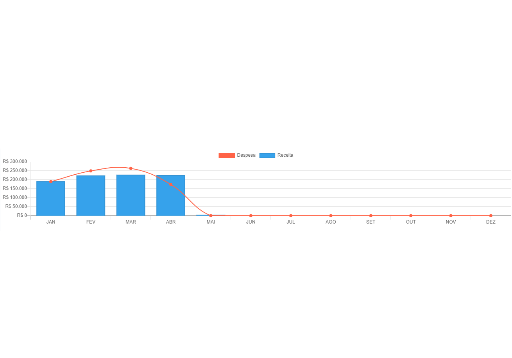

Transparência e facilidade no dia-a-dia das finanças do seu condomínio
Transparência e facilidade no dia-a-dia das finanças do seu condomínio

A Smart Conecta surgiu na Universidade Municipal de São Caetano do Sul (USCS) por um grupo de alunos do curso de análise e desenvolvimento de sistemas no segundo semestre de 2021.
A ideia surgiu de um grupo composto por seis pessoas visando facilitar a gestão de um condomínio para aumentar a confiança e transparência entre os síndicos e moradores através de uma aplicação web.
Visando solucionar a falta de troca informações entre síndicos e moradores, a Smart Conecta desenvolveu um software que oferece uma visão clara e objetiva das atualizações financeiras que ocorrem em um condômino.
Com um dashboard atrativo, simples e intuitivo o usuário desta plataforma poderá verificar o balancete financeiro, como por exemplos visualizar boletos, gastos com manutenções do condomínio e gráficos detalha dos com informações de todas as financas do condomínio.
